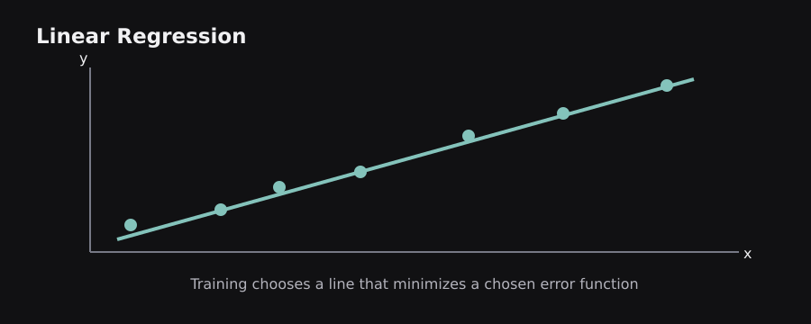
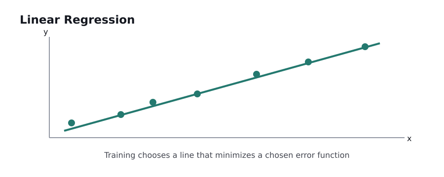
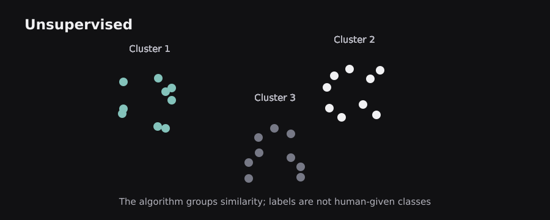
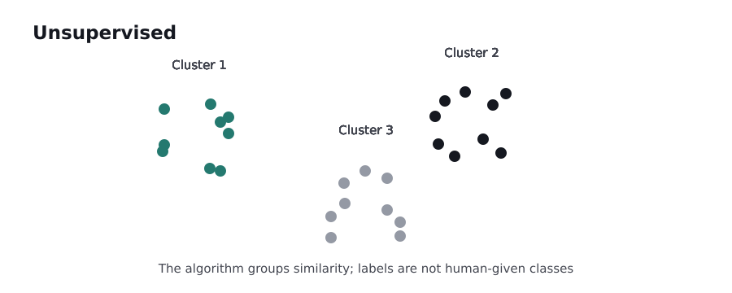

Before deep learning, many remarkably capable models were built from lines, distances, probabilities, and decision rules. These methods remain practical, interpretable, and often hard to beat on structured business data. The chapter connects their mechanics to choosing a trustworthy baseline.
2.0 — Linear regression: fitting a line to evidence
Imagine plotting house area on the horizontal axis and price on the vertical axis. A line that approximately follows the dots gives a simple prediction rule: ŷ = wx + b. Here w is the change in predicted price per unit of area, and b is the intercept. With many features, a linear model adds their contributions: ŷ = w₁x₁ + w₂x₂ + … + b.
A model does not simply draw the line by eye. It chooses coefficients to minimize an objective, commonly mean squared error (MSE). One technique computes a closed-form least-squares solution under appropriate conditions; another updates the coefficients using optimization. In real work, regularized solvers are often more stable, especially when features are correlated or numerous.
Example: if the illustrative rule is price_in_lakh = 0.05 × square_feet + 8, a 1,000-square-foot house produces a prediction of 58 lakh. The rule says each extra square foot adds 0.05 lakh while other inputs remain fixed. That does not imply that size physically causes exactly that price increase, nor that the line remains accurate far outside the training range.
The assumptions concern the model of the conditional mean and errors: nonlinear relationships, changing error spread, extreme outliers, and correlated predictors can undermine interpretations and uncertainty estimates. Simple linear regression is a starting benchmark, not automatically the correct final model.
 
2.1 — Gradient descent: how a model changes its coefficients
If the current model makes errors, training needs a rule for adjusting parameters. Gradient descent uses derivatives of the loss with respect to each parameter. At each step it subtracts a small multiple of the gradient: w_new = w_old − η × ∂Loss/∂w, where η is the learning rate.
For a one-parameter problem, picture a curved graph whose horizontal axis is the weight and whose vertical axis is the loss. A derivative tells us the local slope. Positive slope means moving left tends to lower the loss; negative slope means moving right tends to lower it. The operation is repeated until progress is sufficiently small or a stopping criterion is reached.
Worked idea: if the current weight is 4.0, the gradient is +3.0, and the learning rate is 0.1, the updated weight becomes 3.7. The gradient is calculated from the loss; it is not a guess about whether the prediction should rise or fall. With millions of observations, stochastic gradient descent (SGD) and mini-batch optimization estimate gradients using subsets to reduce the cost per update.
A learning rate that is too high can oscillate or diverge; too low can make progress painfully slow. Non-convex problems can have plateaus and saddle points. The downhill-hiking analogy helps with the direction, but in practice gradients are measured in a high-dimensional space, and the best local direction need not yield the best global result.
2.2 — Logistic regression: turning scores into class probabilities
Despite its name, logistic regression is commonly a classification algorithm. It starts with a linear score z = w·x + b and passes it through the sigmoid function σ(z)=1/(1+e^(−z)), producing a number strictly between 0 and 1. We interpret that number as a model-estimated probability for the positive class, subject to calibration and modeling assumptions.
For a spam detector, a message might produce z=2, giving σ(2)≈0.881. A threshold of 0.5 would label it spam. But a costly application may select a different threshold. Training usually minimizes binary cross-entropy, which grows especially large when the model confidently assigns low probability to the correct answer.
Why not directly output 0 or 1? A smooth sigmoid permits gradient-based learning. A hard step function has an unhelpful derivative almost everywhere and cannot guide incremental parameter adjustments in the same way. Logistic regression still makes a linear decision boundary in the original feature space. Feature engineering can create nonlinear boundaries, but it does not make the basic model an all-purpose nonlinear learner.
Limitation: correlated predictors, highly imbalanced classes, or shifted data can affect interpretation and performance. It is useful because it is cheap, transparent, and can be well calibrated when its assumptions and training data fit the task.
2.3 — Regularization: preventing a model from chasing noise
Suppose a regression model has 500 input features but only a few hundred training records. It may fit accidents in the data rather than reusable patterns. Regularization adds a penalty for complexity to the training objective. Ridge/L2 penalizes the sum of squared coefficients, typically shrinking many coefficients without forcing them exactly to zero. Lasso/L1 penalizes the sum of absolute coefficients and can drive some coefficients to zero.
An elastic-net penalty combines L1 and L2. The strength parameter trades fitting the data against keeping coefficients small. If the penalty is too weak, the model may overfit. If it is too strong, genuinely useful relationships disappear, causing underfitting.
Example: a housing dataset contains square feet, square meters, and several nearly equivalent area measurements. These features are strongly correlated. Unregularized coefficients can become unstable because many combinations give similar predictions. Ridge can stabilize the fit, although coefficients still do not automatically have causal meaning. Lasso might select a smaller subset, but selections can vary when predictors are strongly correlated.
Analogy: packing for a trip with a strict weight allowance forces you to retain only sufficiently useful items. Regularization similarly discourages needless parameters. The difference is that the model optimizes a mathematical penalty rather than thinking about convenience.
2.4 — K-nearest neighbors and distance-based reasoning
K-nearest neighbors (KNN) predicts using examples closest to the new input according to a distance rule. For classification, the neighbors vote for labels; for regression, their outputs are averaged, sometimes with distance weighting. A very small k reacts strongly to individual unusual examples, whereas a large k smooths over local detail.
Imagine an unknown flower represented by petal length and width. A point at (4.5, 1.4) may be classified by checking the closest five labeled flowers. The algorithm has no ordinary fixed coefficients to optimize; it mostly stores training examples and performs distance calculations when asked to predict. This can become slow or memory-heavy as datasets grow.
Feature scaling is essential: if one feature ranges from 0 to 100,000 and another from 0 to 1, Euclidean distance may be dominated by the larger numerical range, even if the small-range feature is important. Missing values and categorical data require an appropriate distance representation.
Curse of dimensionality: in very high-dimensional spaces, many distances become less informative, and “nearby” may no longer mean meaningfully similar. KNN illustrates an important idea reused in vector search and retrieval systems: similarity only works when the underlying representation and metric reflect the task.
2.5 — Decision trees: learning a chain of useful questions
A decision tree splits examples into smaller groups using feature-based conditions. A node might ask income > 50,000?; another asks previous_default = yes?. The final leaf produces a prediction. During training, candidate splits are compared using criteria such as Gini impurity or entropy for classification, and squared-error reduction for regression.
Consider an online lender predicting repayment risk. A shallow tree may first split on overdue payments, then on debt ratio. It forms rectangular decision regions and captures interactions without manually multiplying feature columns. Its explanation is easy to follow: trace one sample along the questions from root to leaf.
Trees can overfit badly when grown without limits. A deep tree may create leaves containing only one or two training records. Maximum depth, minimum leaf size, and pruning help control complexity. Also, individual trees are unstable: small data changes can alter their selected splits.
An important caution is that a decision path is a predictive rule, not a statement of causality or fairness. A feature can proxy for sensitive factors. Interpretable geometry does not guarantee a morally or statistically valid conclusion.
2.6 — Ensembles: random forests, bagging, and boosting
One tree is fragile; several diverse trees can be stronger. Bagging fits models on resampled training data and aggregates their outputs, reducing variance. A random forest adds random feature selection at splits to make trees less correlated. Predictions are typically averaged for regression or combined for classification.
Boosting works differently: models are added sequentially, with later models focused on correcting the remaining predictive errors or the gradient of a specified loss. Gradient boosting, XGBoost, LightGBM, and CatBoost are related but not interchangeable implementations. On many tabular problems, gradient-boosted trees are highly competitive and a strong baseline before trying deep learning.
Analogy: averaging estimates from independent surveyors reduces the effect of one person's noisy judgment. Bagging captures some of that benefit; boosting resembles a series of revisions that concentrate on weaknesses. The limit is that the models are not independent human experts, and correlated errors remain.
Ensembles introduce their own costs: greater memory, longer training, more tuning, and potentially more complicated explanations. Model selection should account for inference latency and how often the application needs updates, not only its validation score.
2.7 — Support vector machines and margins
A support vector machine (SVM) seeks a decision boundary that separates classes with a large margin. The margin is the buffer around the separating hyperplane; the training examples near it are the support vectors. Soft-margin SVMs allow some violations of the boundary, trading model flexibility against errors through a regularization setting often called C.
For two features, the boundary is a line; for many features, it is a hyperplane. A kernel computes similarities corresponding to a richer feature space without explicitly materializing every transformed coordinate. The RBF kernel allows curved decision boundaries based on distance. Kernelized SVMs can be powerful for modest datasets but expensive for very large ones.
SVM outputs are fundamentally margins or scores; a probability needs additional calibration, such as Platt scaling, rather than treating the raw score as P(class). Features should usually be scaled. Good kernel and hyperparameter choices matter considerably.
Concrete comparison: linear logistic regression and a linear SVM can draw similar-looking boundaries, but their training losses differ. Logistic regression is naturally probabilistic in form; SVM emphasizes margin violations. Which generalizes better is empirical, not a matter of one method being universally more “advanced.”
2.8 — Clustering and reducing dimensions
K-means partitions examples into k groups by alternately assigning each point to the closest centroid and updating centroids. It works best when Euclidean proximity reflects meaningful similarity and clusters are reasonably compact. The algorithm does not discover a uniquely correct number of groups. Initialization matters, and different runs can produce different assignments.
DBSCAN groups points in dense regions and can mark isolated points as noise; unlike K-means it need not make every point belong to a cluster. Hierarchical clustering builds a nested grouping from pairwise similarities. The methods encode different definitions of a cluster, so disagreement is unsurprising.
Principal component analysis (PCA) finds directions of maximum variance and projects data onto a smaller number of directions. PCA is a linear representation method, not a guarantee that the most predictive features are kept. t-SNE and UMAP are widely used for visualization, but apparent distances and cluster separations in a two-dimensional plot should not automatically be interpreted as exact relationships in the original space.
 
2.9 — Evaluation: which metric tells the true story?
A confusion matrix counts true positives (TP), false positives (FP), true negatives (TN), and false negatives (FN). Accuracy equals (TP+TN)/all, but accuracy can hide failures on rare classes. If only 1% of payments are fraudulent, predicting “legitimate” for all payments achieves 99% accuracy while catching zero fraud.
Precision = TP/(TP+FP) asks how many flagged items are actually positive. Recall = TP/(TP+FN) asks how many true positives were found. F1 is their harmonic mean when both matter; ROC-AUC measures ranking across thresholds; PR-AUC is often informative with rare positives, but depends on class prevalence. Regression uses metrics such as MAE, RMSE, and R², each answering a different error question.
Use cross-validation when appropriate to estimate variability across splits, and evaluate by relevant groups and time periods. Choose a threshold using validation data and task costs, then report independent test performance. Calibrate probabilities if the downstream system needs trustworthy risk estimates. Never pick the highest metric without asking what a mistake actually costs.
What comes next: these algorithms show that prediction is about representations, losses, and generalization. Neural networks keep those foundations but learn a hierarchy of representations through trainable layers.
Sources and further reading
These sources supplement the original explanations. The uploaded PDFs and cheatsheets informed the topic coverage; their illustrations and prose are not republished.